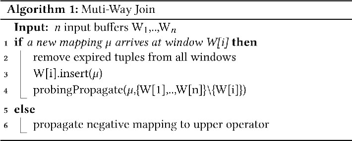
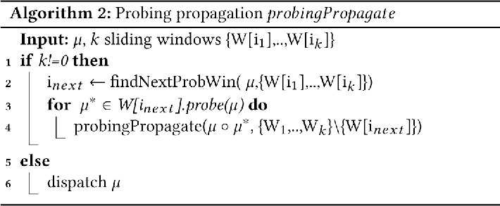
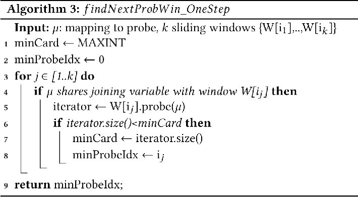
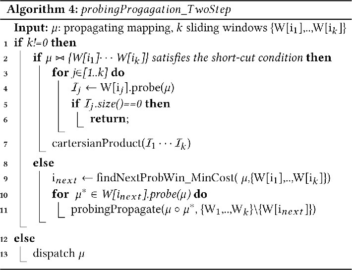
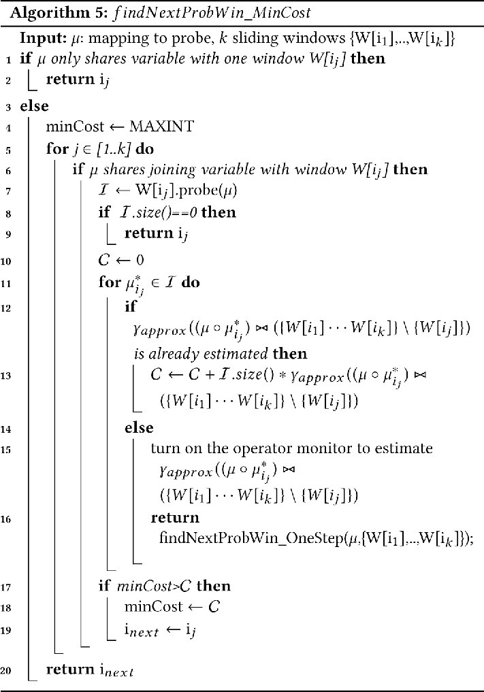
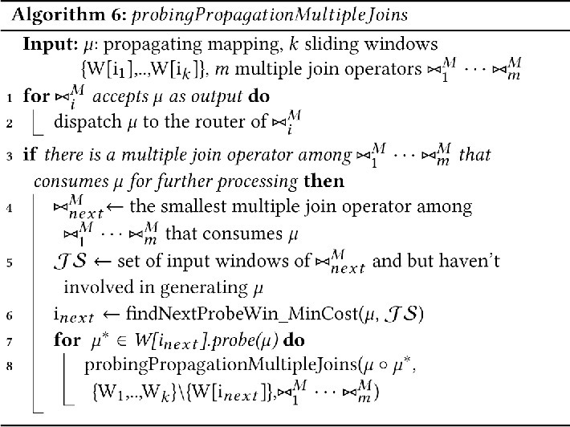

This is a web copy of https://doi.org/10.1145/3184558.3191653. Published in WWW2018 Proceedings © 2018 International World Wide Web Conference Committee, published under Creative Commons CC By 4.0 License. The modifications from the original are solely to improve HTML aiming to make it Findable, Accessible, Interoperable and Reusable. augmenting HTML metadata and avoiding ACM trademark. To reference this HTML version, use:
Permalink: https://w3id.org/oa/10.1145/3184558.3191653
DOI: https://doi.org/10.1145/3184558.3191653
WWW '18: Proceedings of The Web Conference 2018, Lyon, France, April 2018
The join operator is a core component of an RDF Stream Processing engine. The join operations usually dominate the processing load of a query execution plan. Due to the constantly updating nature of continuous queries, the query optimiser has to frequently change the optimal execution plan for a query. However, optimising the join executing plan for every execution step might be prohibitively expensive, hence, dynamic optimisation of continuous join operations is still a challenging problem so far. Therefore, this paper proposes the first adaptive optimisation approach towards this problem in the context of RDF Stream Processing. The approach comes with two dynamic cost-based optimisation algorithms which use a light-weight process to search for the best execution plan for every execution step. The experiments show the encouraging results towards this direction.
CCS Concepts: • Information systems → Join algorithms; Stream management; Resource Description Framework (RDF);
ACM Reference Format:
Danh Le-Phuoc. 2018. Adaptive Optimisation For Continuous Multi-Way Joins Over RDF Streams. In WWW '18 Companion: The 2018 Web Conference Companion, April 23–27, 2018, Lyon, France. ACM, New York, NY, USA 9 Pages. https://doi.org/10.1145/3184558.3191653
Most of current RDF Stream Processing (RSP) engines use the logical query operators introduced in [3] construct their logical query plans from the SPARQL-like query dialects of their choice. Subsequently, the query optimisation might be applied at the logical level by rewriting the plan to improve efficiency, called algebraic optimisation. The common rewriting rules such as reordering selection before joins and evaluating inexpensive predicates before complex ones were used in [8, 21]. Particularly for continuous queries, Arasu et al. [3] proposed rules on window-based operators such as commutative rules on time-based and count-based windows.
The logical query plan needs to be scheduled to be executed in the execution engine of a data stream management system (DSMS) with a physical plan composed of concrete physical operators and costs. As the data arrives to the engine continuously, the DSMS scheduler can use different equivalent physical plans to execute a logical query plan during the life-time of a query. Traditional DBMSs use selectivity information and available indices to choose efficient physical plans (e.g., those which require fewer disk accesses). However, this cost metric does not apply to (possibly approximate) continuous queries, where processing cost per-unit-time is more appropriate [27]. Alternatively, if the stream arrival rates and output rates of query operators are known, then it may be possible to optimise for the highest output rate or to find a plan that takes the least time to output a given number of tuples [40, 43, 45]. Finally, quality-of-service metrics such as response time may also be used in DSMS query optimisation [1, 10, 38, 39].
Optimisation by rescheduling physical query plans are similar to those used in relational databases, e.g., re-ordering a sequence of binary joins in order to minimise a particular cost metric. There has been work in join ordering for data streams in the context of the rate-based model [45, 46]. Furthermore, adaptive re-ordering of pipelined stream filters is studied in [6], and adaptive materialisation of intermediate join results are considered in [7]. Note the prevalence of the notion of adaptivity in query rescheduling: operators may need to be re-ordered on-the-fly in response to changes in system conditions. In particular, the cost of a query plan may change for three reasons: change in the processing time of an operator, change in the selectivity of a predicate, and change in the arrival rate of a stream [4].
Join operator is a core component of an RDF Stream Processing engine as it usually uses a SPARQL-like language fragment consisting of basic graph patterns which are commonly translated to join operations. The join operations usually dominate the processing load of a query execution plan. Due to the constantly updating nature of the continuous query, the query optimiser has to frequently change the optimal execution plan for a query. However, optimising the join executing plan for every execution step might be prohibitively expensive, hence, dynamic optimisation of continuous join operation is a still challenging problem so far even in the wider context, i.e. DSMS (cf. Section 6). Learning from our experience implementing several version of CQELS engines in [32] and [31], we propose the first adaptive optimisation approach towards this problem. This paper will presents this approach with two dynamic cost-based optimisation algorithms which use a light-weight process to search for best query plan. Our experiments in Section 5 show the encouraging results towards this direction.
The rest of the paper is outlined as following. The next section will introduce the continuous multiway join with the general cost model for dynamically finding the optimal query plan in each execution step. Section 3 will follow up with two adaptive optimisation algorithms. The experiments of such algorithms are reported in the following Section 5. Finally, we conclude the paper in Section 7.
The basic graph patterns associated with sliding windows in RSP query languages such as C-SPARQL [9] or CQELS-QL [32] could be translated to a multiway join query. A multiway join query can be evaluated by trees of binary, partially blocking, and pipelined join operators. However, this approach is not sufficient for processing streaming inputs that need to dynamically reorganise the evaluation tree in response to the changes of stream data. Therefore, similar to MJoin [46], we introduce a single multiway join that works over more than two input buffers. This multiway join generates and propagates results in a single step without having to pass these results through a multi-stage binary execution pipeline. Because the multiway join is symmetric, without loss of generality, we extend the incremental equations of the binary join to the n-way join as shown in Equations 1 and 2 where the inserting and expiring happen in the input buffer R 1 of window W 1. Note that, Ri is the input buffer of window Wi of each execution step for i = 1..n. In order to employ our ring-index for window buffers introduced in [31], we represent the incremental evaluation of these equations in Equation 3 using the select operator $\sigma _{\mu _1}(R^2)$ . The operator $\sigma _{\mu _1}(R^2)$ returns all the mappings stored in the input buffer R 2 which are compatible with μ 1. As shown in the experimental result of [31], this operator is supported by the high throughput probe method on the data structure that has ring-indexes on the variables to check the compatibility.
The evaluation of a new mapping μ 1 inserted in to the input buffer R 1 is illustrated in Figure 1.
When a mapping μ 1 is inserted into the input buffer R 1, it will be used to probe one of the other input buffers R 2⋅⋅⋅Rn . Let us assume that R 2 is the next input buffer in the probing sequence. For each mapping $\mu _2^i$ in R 2 that is compatible with μ 1, an intermediate joined mapping in the form $\mu _1\circ \mu _2^i$ is generated. Subsequently, $\mu _1\circ \mu _2^i$ is recursively used to probe the other input buffers to generate the final mappings. When a buffer that does not return any compatible mapping is found, the probing sequence stops. For dealing with the data expiration of each buffer, we use the negative tuple approach which assigns ”negative signatures” to the expired tuples to forward to upper operator to invalidate expired output of the join,. We call them as negative mappings respectively in this paper. Due to the page limit, we would like to refer readers to [31] for further details.
Algorithm 1 shows our incremental evaluation algorithm for a multiway join with n input buffers. Lines - handle new mappings and line is for forwarding the negative mappings to the upper operator to deal with the expiration case [31]. Line calls the recursive sub-routine probingPropagate given in Algorithm 2 to initialise the probing sequence. The probing sequence is given in sub-routine findNextProbWin in line . Each step of the probing sequence is dynamically identified by the output generated from previous steps. Therefore, the probing sequence plays an important role in the performance of this multiway join algorithm. Hence, the sub-routine findNextProbWin is the place holder to introduce the adaptive optimization algorithms in Section 3.


Data stream sources may suffer fluctuations from data arrival, most of them from unpredictable, slow or bursty network traffic [44]. On top of that, due to the streaming nature of the input, the data distribution is unpredictable, thus, making it difficult to have a model for operator selectivity [25]. To deal with changes in the selectivity of the join predicates in multiway joins, we exploit our adaptive multiway join algorithm to find the best execution plans at run-time. As shown in section, we can use the sub-routine findNextProbWin to dynamically chose best sub-probing sequence for each new mapping arriving at an input window. A long this line, we will define the cost model to specify the criteria for choosing the best probing sequence for each new mapping at run-time. Base on the recursive nature of our continuous multiway join, the optimal cost function can be recursively defined in Definitions 4 and 5.
Definition 4 is the optimal cost for a binary join which has only one possible probing sequence. When a new mapping μ arrives at an input buffer of the binary join, the only option to compute new results is to probe the other input buffer R for the mappings compatible with μ. The cost includes $\mathcal {C}(\sigma _{\mu }(R))$ as the cost of probing the input buffer and $\mathcal {C}(\lbrace \mu \rbrace \times \sigma _{\mu }(R))$ as the cost of creating new mappings from μ and the output of σμ (R). Definition 5 is used to recursively choose the next input buffer for the probing sequence μ 1⋈{R 2⋅⋅⋅Rn } that has the minimal cost, provided that the optimal costs of for all possible next probing sequences $\mathbb {C}((\mu _1\circ \mu ^{*}_{i_2})\bowtie (\lbrace R^{2}\cdots {R^n}\rbrace \setminus \lbrace {R^{i_2}}\rbrace))$ are known. However, to compute the value of this cost function, we need to compute $\mathbb {C}$ for all possible probing sequences, which is prohibitively expensive. Therefore, we aim at finding a near optimal probing sequence by approximating this cost function through two light-weight estimation methods described next.
As shown by the experimental results of the throughput of the probing operation in [30, 31], we can assume that the cost of probing an input buffer can be estimated by a constant (γσ ), since it does not change dramatically with respect to the sizes of the window buffers. Moreover, we can also assume that the cost of generating a mapping from two mappings is constant (γ ×). Therefore, we have the following definitions for γσ and γ ×.
To adapt to the changes in the input buffers, our one-step adaption method assumes that the costs of the next steps in the possible probing sequences are approximatively the same for each output generated from the current probing step. Definition 8 approximates the cost of each next probing sequence $(\lbrace R^{2}\cdots {R^n}\rbrace \setminus \lbrace {R^{i_2}}\rbrace)$ as a constant γ ⋈:
Hence, we have the approximate cost function for a probing sequence as shown below.
This approximation enables us to build a simple algorithm for finding the potentially best probing sequence by checking the cardinalities of all possible probing operations of a mapping μ on k sliding windows {W[i1],..,W[i k ]}. The algorithm is described in Algorithm 3. Note that this algorithm can use the counters stored in the ring index entries of the keys on the join predicates of the window buffer. Calling the probe function on a window at line will return the index entries for identifying the cardinality of the probing output.

The more probing sequences are possible for μ 1⋈{R 2⋅⋅⋅Rn } the harder it gets to compute the cost function given in Definition 5. We analyse the number of possible probing sequences of a join query based on its join graph. A join graph consists a set of windows as its vertices. Two vertices are connected if two windows share a join predicate (same mapping variable). Figure 2 depicts four join graphs for two 4-way joins and two 6-way joins. Note that each vertex is labeled with name of the shared mapping variable. Join graphs connected as a line as in Figure 2a and Figure 2c are called linear joins. If a mapping μ 1 comes from both ends of the linear join, there is only one possible probing sequence. For instance, the only possible probing sequence for μ 1⋈{R 2, R 3, R 4} is μ 1⋈R 2⋈R 3⋈R 4. Therefore, it is easy to estimate $\mathbb {C}(\mu _{1}\bowtie \lbrace R^{2}\cdots {R^n}\rbrace)$ in this case. For instance, by monitoring the probing operation with the given probing sequence, its cost can be stored in an extra field of the ring index entry of the index used for the join predicate [31].
Another interesting property of linear joins is that the inner nodes have only two connections to two separate linear subjoins. This property can be used to efficiently estimate the probing sequences in a linear join by breaking the graph into smaller linear sub-joins. The join graphs that have the star and bushy topologies like Figure 2b and Figure 2d are called star join and bushy join, respectively. The higher the connectivity of the graph, the more complicated it becomes to compute the min part in Definition 5. However, we have found a useful property for the high connectivity vertices as shown in the following equation.
This property says that the Cartesian product of the all outputs of probing operations $\sigma _{\mu }(R^{i_j})$ , using the mapping μ on the input buffers $R^{i_j}$ , is equivalent to the join operation $\mu \bowtie (\lbrace R^{i_1}\cdots {R^{i^m}}\rbrace)$ . The condition, called short-cut condition, is met when μ contains all shared variables of pairs of distinct input buffers. Based on these properties, we can provide an approximation function γapprox for $\mathbb {C}((\mu _1\circ \mu ^{*}_{i_2})\bowtie (\lbrace R^{2}\cdots {R^n}\rbrace \setminus \lbrace {R^{i_2}}\rbrace))$ . An improved cost approximation function is shown in Definition 11.
Based on this definition, we propose the two-step+ algorithm to enable short-cut joins shown in Algorithm 4. Lines - check the short-cut condition. When the short-cut-condition is not met, the algorithm calls the sub-routine $findNextProbWin\_MinCost$ to find the next buffer to probe based on the approximate costs.

This sub-routine is described in Algorithm 5. It finds the next input buffer that potentially leads to the minimal cost value. Lines - check if all estimations γapprox are available. Then, the best probing sequence will be determined in lines -. If one of the estimations needed is not available, the algorithm will switch to the one-step algorithm to find the probing sequence as shown in lines -. In the process, line will turn on the operator monitor to measure the time spent for this probing sequence, and then assign this value to γapprox for the next executions. To direct the probing sequence to the short-cut condition, we assign a zero cost for $\gamma _{approx}(\mu \bowtie (\lbrace R^{i_1}\cdots {R^{i^m}}\rbrace))$ if $\mu \bowtie (\lbrace R^{i_1}\cdots {R^{i^m}}\rbrace)$ that meets the short-cut condition.

To share the computations and the memory when processing multiple joins that have the same set of input buffers, we modify the multiway join algorithm in Section 2.1 associated with the adaptive optimization algorithms in Section 3 to build a shared join operator, i.e, the multiple join operator. Let us assume m multiple window joins $W^1_j\cdots \bowtie {W^m_j}$ where j=1...k and $W^i_j$ is a window buffer extracted from the RDF stream Si , i=1...n. Let $W^i_{max}$ be the window buffer that has a window size equal to the maximum window size over all $W^i_j$ , j=1...k. Then, the containment property [24] as shown in Definition 12 holds.
Due to this property, the processing of the query $W^1_{max}\cdots \bowtie {W^n_{max}}$ produces an output that contains the outputs of all queries $W^1_j\cdots \bowtie {W^n_j}$ , j=1...k. Therefore, the join component only has to execute a single multiway query for $W^1_{max}\cdots \bowtie {W^n_{max}}$ . In the routing component, each resulting mapping has to be routed to the query that takes it as an input. We call the routing component of the multiple join operator router. The router maintains a sorted list of the windows relevant to each join. The windows are ordered by window sizes in increasing order. Each output mapping is traversed to its constituent leaf-mappings to find the mappings which are valid within valid time intervals of the windows. When a mapping satisfies the time condition of a query, it is routed to the query's output buffer. Figure 3 illustrates a multiple join operator for 3 queries over 2 streams S 1 and S 2 where $Q_{1}=W^1_1\bowtie {W^2_1}$ , $Q_{2}=W^1_2\bowtie {W^2_2}$ and $Q_{3}=W^1_3\bowtie {W^2_3}$ . This multiple join operator connects the 2-way join operator $W^1_{max}{\bowtie }W^2_{max}$ to its router where $W^1_{max}=W^1_3$ and $W^2_{max}=W^2_3$ . The left-hand side of the figure shows how the router delivers the output mappings from the 2-way join to each query. For instance, when the new mapping ⟨a 1, b 6⟩ arrives at the stream S 1, the 2-way join probes the input buffer $W^2_{max}$ to generate two output mappings ⟨a 1, b 6, c 1⟩ and ⟨a 1, b 6, c 5⟩. Based on the window conditions of each query, the router routes ⟨a 1, b 6, c 5⟩ to Q 1 and Q 2 and both ⟨a 1, b 6, c 1⟩ and ⟨a 1, b 6, c 5⟩ to Q 3.
In the general case, the concurrent queries registered to the system only share subsets of the streams involved in their queries. Therefore, we create a network of multiple join operators to enable sharing the execution of sub-queries for a group of queries. Each multiple join operator is created for a group of joins that share the same set of streams. Figure 4 illustrates a network for 4 queries over 4 streams S 1, S 2, S 3 and S 4, where $Q_{1}=W^1_1\bowtie {W^2_1}\bowtie {W^3_1}$ , $Q_{2}=W^2_2\bowtie {W^3_2}$ $Q_{3}=W^2_3\bowtie {W^3_3}\bowtie {W^4_3}$ and $Q_{4}=W^2_4\bowtie {W^3_4}\bowtie {W^4 _4}$ . This network is composed of three multiple join operators $\bowtie ^M_1$ , $\bowtie ^M_2$ and $\bowtie ^M_3$ where $\bowtie ^M_1$ is for Q 1, $\bowtie ^M_2$ is for Q 2 and $\bowtie ^M_3$ for Q 3 and Q 4.
To reduce the amount of memory allocated for the window buffers, the network only uses one buffer for each stream. This buffer contains all window buffers on that stream. For example, the input buffer $W^2_{max}$ on the stream S 2 contains the windows $W^2_1$ , $W^2_1$ , $W^2_2$ , $W^2_3$ and $W^2_4$ . Therefore, multiple join operators in the network share subsets of all input buffers created for the network. This enables an incremental evaluation for the network in the same way as for multiway joins. Algorithm 6 presents the probing propagation process in the network.

The algorithm recursively propagates the probing operations to find possible outputs in the join component, before forwarding join outputs to the routing component. When a new mapping arrives at an input window, it will trigger a probing graph that contains all probing sequences of the multiple joins that consumes that new mapping. For instance, a new mapping μ 2 in the stream S 2 will trigger the following probing sequences: $seq_1=\mu _2\bowtie \lbrace W^1_{max},W^3_{max}\rbrace$ for $\bowtie ^M_1$ , $seq_2=\mu _2\bowtie {W^3_{max}}$ for $\bowtie ^M_2$ and $seq_3=\mu _2\bowtie \lbrace W^3_{max},W^4_{max}\rbrace$ for $\bowtie ^M_3$ . They form the probing graph depicted in Figure 5, in which they share a probing sub-sequence seq 2. Note that the solid lines represent for probing sequences inside the multiway joins and the broken lines represent for routing paths from the multiway joins to the corresponding routers.The output mappings of this shared probing sequence can either be delivered to the router of $\bowtie ^M_2$ or be used for further processing in seq 1 or seq 3.
At each stage of the probing graph, the algorithm checks if the mapping used for the probing is the output of a multiple join operator. In this case, the mapping is sent to the router of this multiple join operator (lines -). Line is used to check if the propagated mapping can be used to generate joined results by a multiple join operator. If so, line chooses the one that has the smallest set of inputs. This multiple join operator applies the two-step+ algorithm for choosing the best probing sequence on a single multiway join (line ).The algorithm is only applied to the subset of the input buffers that have been processed on the sequence created by propagated mappings.
In this section, we present our experimental results via two types of experiments. The first type aims to show how two optimisation algorithms in Section 3 behave in a single multiway join. The second one will focus on algorithms presented in Section 4. The implementations of these algorithms are based on the latest version of CQELS engine [31] which will be open sourced at http://cqels.org/ . The experiments are executed on a standard workstation with Debian Squeeze AMD64 2x E5606 Intel Quad- Core Xeon 2.13GHz with 16GB RAM, running the Java SE Runtime Environment (build 1.7.0_51-b13) Java HotSpot 64-Bit Server VM.
In the first type of the experiments on single multiway join queries we compare them against the fixed probing sequences used in in [30, 31]. We also compare them against the ESPER engine 1 which serves as the baseline. Similar to previous experiments, we have created an ad-hoc data structure specifically for each window buffer. We have measured the throughputs for the four types of queries given in Figure 2 with different window sizes. As shown in [30, 31], the ratio of the number of distinct values in the join predicates to the window size has a significant impact in the throughput of the join operator. Hence, we fix this ratio in all test runs. To check the adaptability of the algorithms, in each test run, we stream solution mappings to the window buffers with three stages. In the first stage, we fill the window buffers with mappings to keep the selectivity on the join predicate at 100%. Then, in the next stage, we stream the same number of mappings but with a selectivity of 10% to test if the engines could adapt to the changes of the new selectivity. Finally, in the last stage, we stream the same number of mappings with the selectivity of 100%.
Figure 6 reports on the experimental results. The results show that the two-step+ algorithm outperforms the other algorithms by orders of magnitude. For the 6-way join with the bushy graph, ESPER reported an out-of-heap-size error for window sizes greater than 100 mappings. In summary, the one-step algorithm performs 175%-400% better than the fixed probing sequence algorithm. The two-step+ algorithm provides in average a throughput which is twice as high as the one given by the one-step algorithm. The higher the likelyhood of short-cut joins, the higher the throughput of the two-step+. In particular, the 4-way join with star graph and 6-way join with bushy graph produces more than 7 times and 10 times higher throughputs than the one-step-based version, respectively.
In the next type of experiments, we evaluate the performance of the multiple query optimisation algorithm by testing its scalability when the number of concurrent queries increases. The evaluation includes three cases: The first two cases are 2-way joins and 3-way joins that share the same 2 and 3 streams respectively. In the third case, there is a mixture of three query types, namely 2-way joins, 3-ways join, and 4-way joins whose input streams are randomly chosen from 4 streams. The window size of each input stream is chosen randomly between 100,000 and 200,000 mappings. In each case we executed a series of runs for a number of queries ranging from 2 to 1,000. For each test run, we first register its concurrent queries, then we filled up all windows. After all windows were filled, we measured the processing throughput of the engine used. The engine consumes incoming data distributed evenly among 4 streams. In these experiments, we also used ESPER with ad-hoc data structures for each stream as the baseline engine and we compared against the CQELS engine equipped with the multiple query optimiser.
Figure 7 shows the experimental results. We can see that the throughput of ESPER drops rapidly when the number of queries increases. The sudden stops in the plot line are due to out-of-heap error during the processing. In all tests, the throughput of CQELS only decreases marginally. This stems from the fact that adding more queries only adds small additional loads on the routers, while the number of streams are unchanged. Since the processing load only depends on the maximum window sizes of all query windows on each input stream, this guarantees scalability.
Initial efforts on adaptive query plans include mid-query re-optimisation [26] and query scrambling, where the objective was to pre-empt operators that become blocked and to schedule other operators instead [2, 44]. To further increase adaptivity, instead of maintaining a rigid tree-structured query plan, the Eddies approach [4] performs scheduling of each tuple separately by routing it through the operators that make up the query plan. Thereby, the operators of the query plan are dynamically re-ordered to adapt to the current system conditions. This is driven by tuple routing policies that attempt to find which operators are fast and selective, such that those operators are executed first. This approach was applied to continuous queries in [13, 36] and was evaluated in [17]. The extended version for multi-way joins can be found in [37, 42]. On top of that, it was also extended to consider semantic information such as attribute correlations during routing [11]). For distributed settings, the queue length is considered as a third factor for tuple routing strategies [41].
To achieve adaptivity, the processing engine has to deal with some overheads. The first overhead is having to re-route each tuple separately. The next overhead is migrating internal states stored in some operators from the current query plan to the new query plan that has a new arrangement of operators. The issue of state migration across query plans was studied in [18, 50]. More details on adaptive query processing can be found in [5, 19, 22].
When there are multiple continuous queries registered, memory and computing resources can be shared to optimise the overall processing. For selection queries, a possible multi-query optimisation is to index the query predicates and store auxiliary information in each tuple that identify which queries it satisfies [12, 13, 29, 35, 48]. When a new tuple arrives for processing, its attribute values are extracted and matched against the query index to see which queries are satisfied by this tuple. Data and queries may be thought of as duals, in some cases reducing query processing to a multi-way join of the query predicate index and the data tables [13, 35]. Indexing range predicates is discussed in [35, 48], whereas a predicate index on multiple attributes is presented in [34, 35].
In addition, memory usage may be reduced by sharing internal data structures that store operators’ states [16, 20, 49]. Moreover, in the context of complex queries containing stateful operators such as joins, computation may be shared by building a common query plan [15]. For example, queries belonging to the same group may share a plan, which produces the union of the results needed by the individual queries. A final selection is then applied to the shared result set and new answers are routed to the appropriate queries. An interesting tradeoff appears between doing similar work multiple times and doing too much unnecessary work. Techniques that balance this tradeoff are presented in [14, 28, 47]. For example, suppose that the workload includes several queries referencing a join of the same windows, but having a different selection predicate. If a shared query plan performs the join first and then routes the output to the appropriate queries, it is possible that unnecessary tuples are generated, because, some of the joined tuples may not satisfy any selection predicate. On the other hand, if each query performs its selection first and then joins the surviving tuples, then the join operator cannot be shared and the same tuples will be probed many times. Finally, sharing a single join operator among queries referencing different window sizes is discussed in [23].
Even there are several lines of work on adaptive query optimisation and optimisation of continuous query execution in general in the last 20 years, most of the proposed approaches are implemented and tested in a single system or a limited sets of systems within small scopes of certain application domains. Therefore, to the best of our knowledge, there have not been any insightful investigation of dynamic optimisation at physical execution level in the context of RDF Stream Processing, especially in multiway join query. Therefore, we made the first effort modelling the problem to design the adaptive optimisation algorithms in Section 3 test in our engine CQELS [31]. Note that, there is a derived work [33] from our continuous multiway join concept that was firstly introduced in [30]. The algorithms and cost models of this work were inspired from ours.
The paper presents our effort on addressing a very challenging problem of dynamic optimisation of join operation in continuous query over RDF Streams which we believe is a very central performance problem of RSP engines. We modelled the join operations on RDF Streams as a continuous multiway join which help us to introduces a general recursive cost model. Via this cost model, we propose two approximation versions which help us to introduce two light-weight adaptive optimisation algorithms. Our experimental results on simulated data show very encourage performance gain in controlled settings. This opens up interesting and potential options for implementing dynamic query optimisers for RSP engines.
This research has been supported by the Marie Sklodowska-Curie Programme H2020-MSCA-IF-2014 under Grant No. 661180.
1https://github.com/espertechinc/esper
This paper is published under the Creative Commons Attribution 4.0 International (CC-BY 4.0) license. Authors reserve their rights to disseminate the work on their personal and corporate Web sites with the appropriate attribution.
WWW '18, April 23-27, 2018, Lyon, France
© 2018; IW3C2 (International World Wide Web Conference Committee), published under Creative Commons CC-BY 4.0 License. ACM ISBN 978-1-4503-5640-4/18/04.
DOI: https://doi.org/10.1145/3184558.3191653